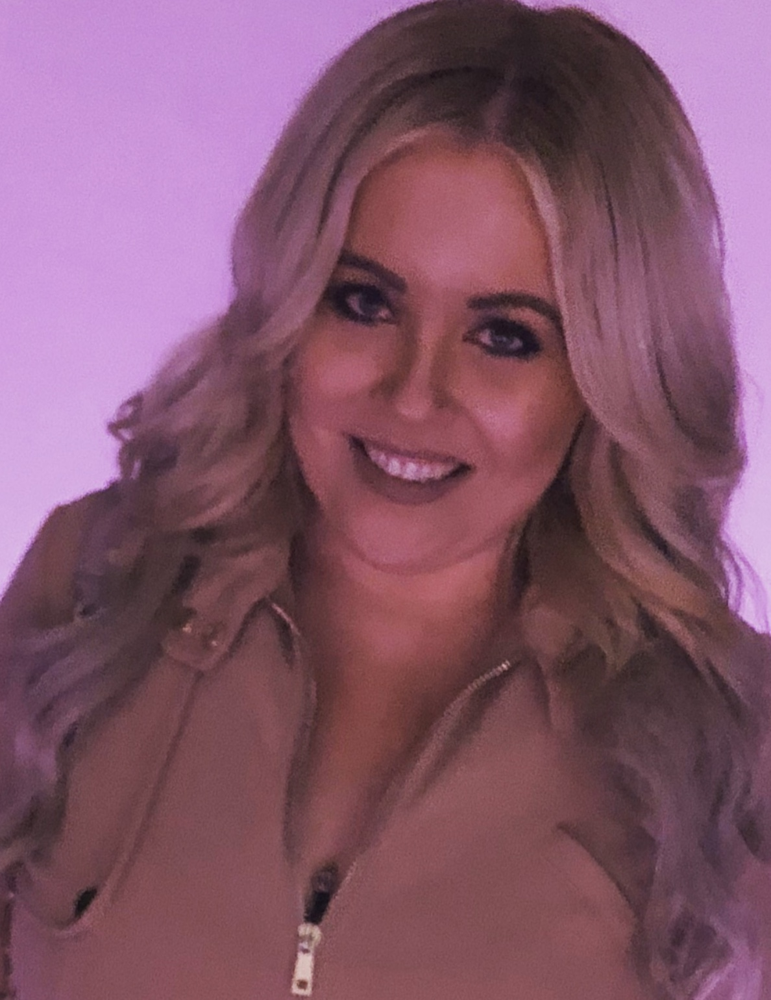

About Me
My name is Kassidy Erickson. I am a born and raised resident of Phoenix, Arizona. In the Spring of 2014, I earned a dual-certificate and degree in education from Arizona State University. Following graduation, I have since held a four year career as a Special Education teacher in the Washington Elementary School District. After a deep evaluation of my life experiences and professional needs, I made the decision to change my career and begin web development. I have always been intrigued by the technological world and the way things work, I am a creative problem solver who enjoys a challenge, and found that a career in web development would be the perfect fit for what I was looking for.
I am passionate about technology and the advances in web development, and would like to contribute to this growing field. My mission is to lead a hard working and focused career in the web development field, where I am challenged and continuously building upon my web development skills. I have had many experiences working on teams, that have helped grow upon my communication, articulation, and delegation skills. Each of my experiences in previous employments have consisted of large amounts of collaboration, shared work, and focused problem solving.
My educational and career experiences have allowed me to expand and grow upon my many transferable skills. I am confident in my abilities involving instruction, multitasking, time management, problem solving, prioritization, and meeting deadlines. I take great pride in my organizational skills and sense of responsibility, motivation, and ownership of my professional work.
Connect with Me